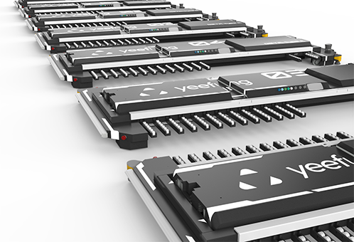
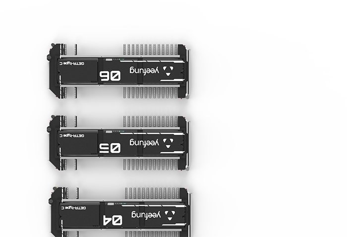
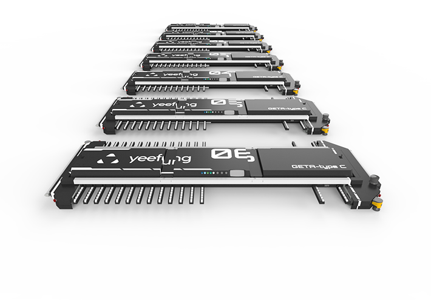
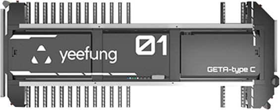

想了解更多？请随时联系我们 400-788-6299
深圳怡丰机器人科技有限公司是深圳怡丰自动化科技有限公司的全资公司，于2014年成立，主攻高端搬运机器人研发领域
Copyright 2016 深圳怡丰机器人科技有限公司
梳齿型停车AGV 可全方位运动
前后 左右 转弯 差速 自旋
实现快速的直线运动的同时能够进行旋转运动,更快,更有效率地完成移动命令
自动判断通道错车,调整移动速度及转向时间,让多台AGV同时运作实现最优化管理.
自主研发的“双舵轮驱动”单元、“举升夹抱式”汽车运载机构，结合激光及磁钉双重导航系统，真正意义上实现了“无人化”全自动停车，最大承重可达2.2T
应用“迪杰斯特拉”等算法，灵活定制机器人行驶路径，能适应各类复杂停车环境。定位精度可控制在正负5mm以内，在有限的停车空间内进行无轨全方位运动，显著增加20%－40%的停车位，弥补传统立体停车库和其它停车设备的不足。
梳齿交替设计降低对车辆轮胎的损害。梳齿上的一排排的小轮子是极具人性化的细节设计，它的滚动能让车辆轻微移动调整位置，把对车胎的损害降到最低。
多重安全防护。包括机械防撞、激光保护探测扫描器、急停按钮等，可以在各种情况下保证AGV系统、操作人员及设备的安全。
多重安全防护。包括机械防撞、激光保护探测扫描器、急停按钮等，可以在各种情况下保证AGV系统、操作人员及设备的安全。
更多产品推荐
想了解更多？请随时联系我们 400-788-6299